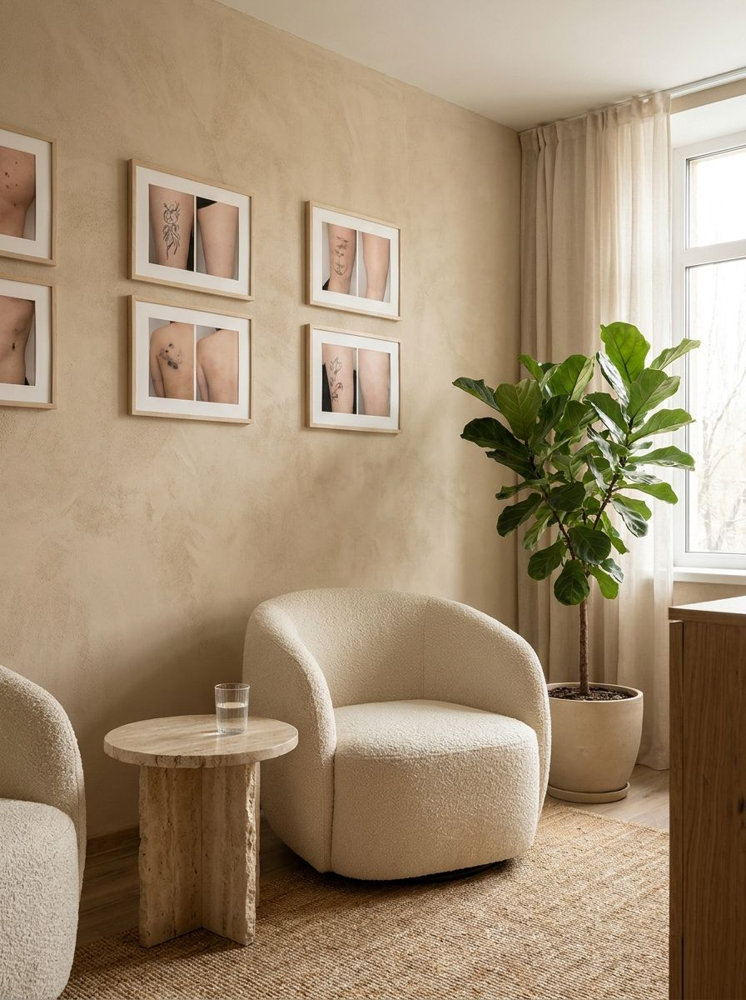
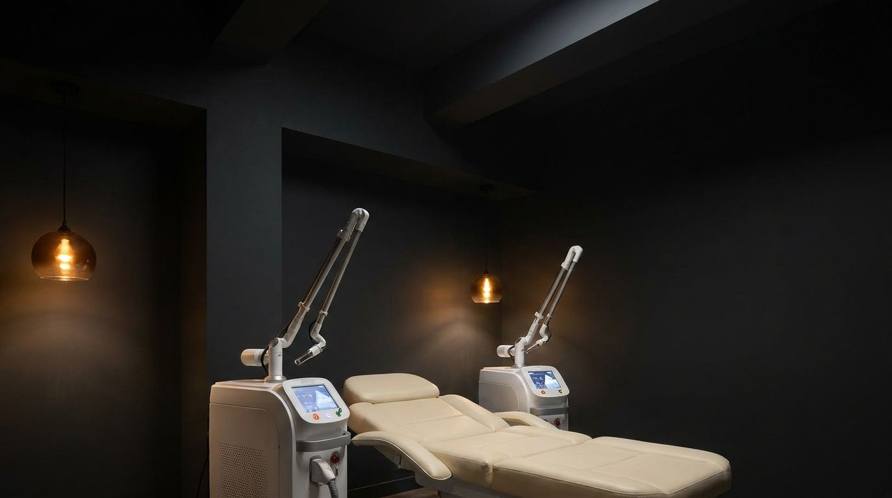
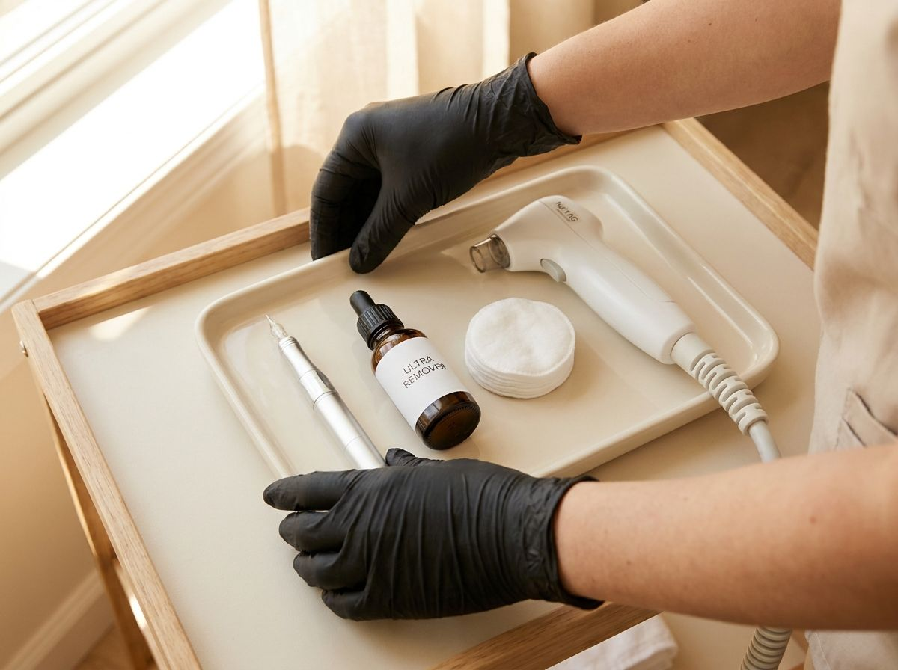
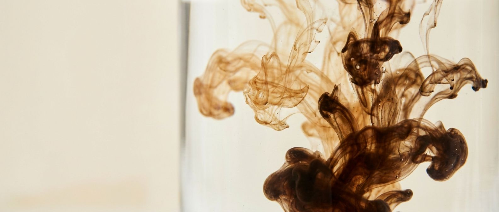

Центр видалення татуювань і татуажу у Львові та Харкові
Ми займаємося тільки видаленням татуювань і перманентного макіяжу. Понад 50 000 процедур, лазер і власна система ремуверів, авторська методика, за якою працюють фахівці у 30 країнах.
Видаляємо невидаляєме
Ми не робимо всього потроху. Понад десять років ми щодня видаляємо татуювання і перманентний макіяж — тому знаємо, як поводиться кожен пігмент, і що робити, коли попереднє видалення пішло не так.
-
01
Тільки видалення
Жодних інших послуг: з 2017 року ми займаємося лише видаленням небажаного пігменту.
-
02
Лазер і ремувер
Обираємо метод під конкретний пігмент і шкіру, а не під апарат, який є в кабінеті.
-
03
Складні випадки
Багатошарові перекриття, мінеральні пігменти і наслідки невдалих попередніх видалень.
Наші послуги
Від старого татуювання до стрілок на повіках — працюємо з будь-якою зоною і будь-яким пігментом. Метод і протокол підбираємо після огляду.
Видалення татуювань
Чорні, кольорові, старі й багатошарові роботи, а також тату після невдалих спроб видалення — до чистої шкіри або під перекриття.
Видалення перманентного макіяжу брів
Сірі, сині, червоні, жовті й бежеві відтінки. Прогнозуємо зміну кольору під час курсу і не допускаємо яскравих залишків.
Видалення перманентного макіяжу/татуажу губ
Контури, асиметрія, міграція пігменту. Розуміємо природу інверсії мінеральних пігментів і уникаємо потемнінь.
Видалення перманентного макіяжу повік
Стрілки, міжвійка, нижні повіки. Працюємо зі стерильними склеральними шильдами — безпечно для очей.
Видалення татуювань травматичної природи
Безоплатна волонтерська ініціатива: видаляємо частинки пороху, сажі й уламків у військових і цивільних, які постраждали від вибухів.
Кейси та результати
Результати видалення татуювань і татуажу наших клієнтів — від простих курсів до складних випадків після інших салонів. Натисніть на фото, щоб роздивитися деталі.
Усі кейси


Відгуки клієнтів
Понад 50 розгорнутих відгуків на Google Картах про наші центри у Львові та Харкові.

Не знаєте, чи можна видалити саме ваше татуювання? Надішліть фото.
Фахівець оцінить пігмент, підкаже метод, орієнтовну кількість процедур і вартість — ще до візиту.

Про Центр 10/64
Центр 10/64 — вузькоспеціалізований центр видалення татуювань і перманентного макіяжу. Ми почали у 2017 році в Харкові, у 2022-му відкрили центр у Львові. За цей час провели понад 50 000 процедур і не займаємося нічим, крім видалення небажаного пігменту.
Команда — п'ять експертів з медичною освітою, які разом проводять близько 1 000 процедур щомісяця. Кожен пройшов внутрішнє навчання і тестування, а практичний досвід кожного вимірюється тисячами процедур. Поєднуємо лазер і ремувер, тому беремося за складні випадки: багатошарові перекриття, мінеральні пігменти, наслідки невдалих видалень.
Керівник центру Ярослав Вінніченко — експерт з видалення татуювань і автор методики безпечного видалення, за якою працюють 600+ фахівців у 30 країнах; він виступав на понад 50 українських і міжнародних конференціях. Разом із засновницею Мариною Ларіною та науковцями Лабораторії Інноваційних Біотехнологій він створив сертифіковану систему ремуверів ULTRA REMOVER — нею користуються понад 1 000 спеціалістів. З 2022 року ми безоплатно видаляємо травматичні татуювання військовим і цивільним.
Способи видалення татуювань і татуажу
Універсального методу не існує. Ми обираємо між лазером і ремувером — або поєднуємо їх — залежно від пігменту, зони і стану шкіри.

-
Лазерне видалення татуювань і татуажу
Короткі імпульси Nd:YAG лазера подрібнюють частинки фарби, а імунна система поступово їх виводить — тому тату світлішає ще кілька тижнів після сеансу. Працюємо на каліброваних неодимових лазерах PRIME Laser Systems з кріоохолодженням шкіри. Чим наносекундний Nd:YAG відрізняється від піко-лазера, розповідаємо в блозі.
-
Видалення ремувером
Хімічне видалення татуажу без лазерного світла: фахівець вводить у шкіру ремувер апаратом, і пігмент виходить разом із кірочкою. Ми працюємо на системі ULTRA REMOVER — власній розробці засновників центру. Ремувер ефективний для жовтих, білих, блакитних і бірюзових пігментів, які лазер не бере, і для виправлення інверсії кольору.
-
Комбінований метод із CO2-лазером
У Львові поєднуємо неодимовий лазер із CO2-лазером. Таке поєднання пришвидшує видалення і водночас шліфує рубці, що залишились від тату-машинки або травматичних попередніх видалень.
-
Індивідуальний протокол
Перед кожною процедурою фахівець оцінює зміни пігменту і стан шкіри та за потреби коригує метод і інтервали — зазвичай 6–8 тижнів. Мета — максимальне освітлення або повне видалення за оптимальну кількість сеансів.
Часті запитання
Коротко про кількість сеансів, ціни, підготовку і відчуття. Не знайшли відповіді — напишіть нам, відповімо особисто.
Кількість сеансів залежить від складу фарби, її кількості, глибини внесення та роботи вашої імунної системи. Легкі розтушовки помітно світлішають уже після першої процедури, щільним багатошаровим татуюванням потрібен довший курс. Між сеансами витримуємо 6–8 тижнів: частіші процедури не пришвидшують видалення, а лише підвищують ризики.
Лазер подрібнює пігмент світловими імпульсами, а організм поступово його виводить; після процедури можливі почервоніння і набряк, але наступного дня можна йти на роботу. Ремувер вводиться в шкіру апаратом і виводить пігмент разом із кірочкою — відновлення займає 5–8 днів. Ремувер працює з кольорами, які лазер не бере: жовтими, білими, блакитними, бірюзовими.
Так, у більшості випадків — до чистої шкіри. Якщо ви плануєте нове перекриття, можемо зробити часткове освітлення. Ми прогнозуємо зміну кольору під час курсу і підбираємо метод так, щоб уникнути яскравих залишкових відтінків.
Ціни однакові в обох центрах. Видалення татуювання — від 600 ₴ за процедуру, залежно від розміру і щільності малюнка. Татуаж брів, контуру губ або хвостиків повік — 1 600 ₴, повік чи губ повністю — 1 800 ₴. Надішліть фото — і ми назвемо точну вартість.
Відчуття індивідуальні й залежать від зони. Щоб процедура була комфортнішою, ми використовуємо кріоохолодження шкіри — воно зменшує теплове навантаження. Видалення невеликої зони разом із консультацією триває близько 30 хвилин.
Спеціальна підготовка не потрібна. Шкіра в зоні видалення має бути здоровою — без свіжої засмаги, запалень і подразнень. Перед видаленням татуажу брів бажано за місяць утриматися від ламінування і за два тижні — від фарбування.
Процедуру переносимо, якщо в зоні видалення є запалення, подразнення або свіжа засмага. Про інші обмеження — вагітність, хронічні захворювання, прийом ліків — фахівець запитає на консультації і порадить, коли безпечно починати курс.
Видалення татуювань і перманентного макіяжу у Львові та Харкові
Татуювання і перманентний макіяж наносять за кілька годин, а жити з ними доводиться роками. Коли малюнок втратив актуальність, татуаж брів змінив колір, а контур губ поплив, постає питання професійного видалення татуювань і татуажу. Центр 10/64 — центр видалення татуювань, який має досвід 10 років і займається лише цим: видаленням татуювань і перманентного макіяжу у Львові та Харкові.
Видалення небажаного пігменту — це не одна процедура «за прайсом», а курс, який будується під конкретну шкіру і конкретну фарбу. На консультації фахівець оцінює колір і щільність пігменту, глибину внесення, стан шкіри та історію попередніх процедур. Після цього обираємо метод: лазер, ремувер чи їх поєднання.
Лазерне видалення тату і татуажу ми проводимо на каліброваних неодимових лазерах PRIME Laser Systems із кріоохолодженням. Лазер найкраще працює з чорними та червоними пігментами: подрібнена фарба поступово виводиться організмом, і малюнок світлішає від сеансу до сеансу. Там, де лазер безсилий — жовті, білі, блакитні відтінки та мінеральні пігменти з ризиком потемніння, — працюємо ремувером ULTRA REMOVER, який створили засновники центру разом із науковцями.
Ми спеціалізуємося на складних випадках видалення: багатошарових перекриттях, старих татуюваннях, роботах після невдалих спроб в інших салонах. За авторською методикою Ярослава Вінніченка працюють понад 600 фахівців у 30 країнах, а практичний досвід команди — понад 50 000 процедур. Тому ми чесно говоримо про прогноз: де можливе видалення до чистої шкіри, а де реалістичніше освітлення під нове перекриття.
Курс зазвичай складається з кількох сеансів з інтервалом 6–8 тижнів: цей час потрібен шкірі для відновлення, а імунній системі — щоб вивести фрагменти пігменту. Після лазера можливі почервоніння і набряк, після ремувера — легкі кірочки, які сходять за 5–8 днів. Після кожної процедури ви отримуєте рекомендації і засоби для домашнього догляду.
Для перманентного макіяжу діє окремий підхід. Видалення татуажу брів, губ і повік потребує розуміння складу пігментів і особливостей зони: для повік ми використовуємо стерильні склеральні шильди, для губ враховуємо ризик інверсії кольору.
Центр 10/64 працює у Львові (просп. В'ячеслава Чорновола, 67в) та Харкові (вул. Миколаївська, 4), ціни в обох містах однакові. Щоб дізнатися вартість і кількість процедур для вашого випадку, надішліть фото — фахівець відповість особисто.

Запис на процедуру у Львові та Харкові
Залиште заявку або надішліть фото — ми зв'яжемося з вами, відповімо на запитання і підберемо зручний час консультації.
У дворі за ТЦ «Інтерсіті», навпроти дитячого майданчика. Паркування — вул. Окуневського, Панча, Кошиця або біля ТЦ «Арсен».
Відкрити на мапіБіля метро «Майдан Конституції» і ТРЦ Nikolsky. Паркування — ТРЦ Nikolsky, Майдан Конституції, пров. Слюсарний.
Відкрити на мапі